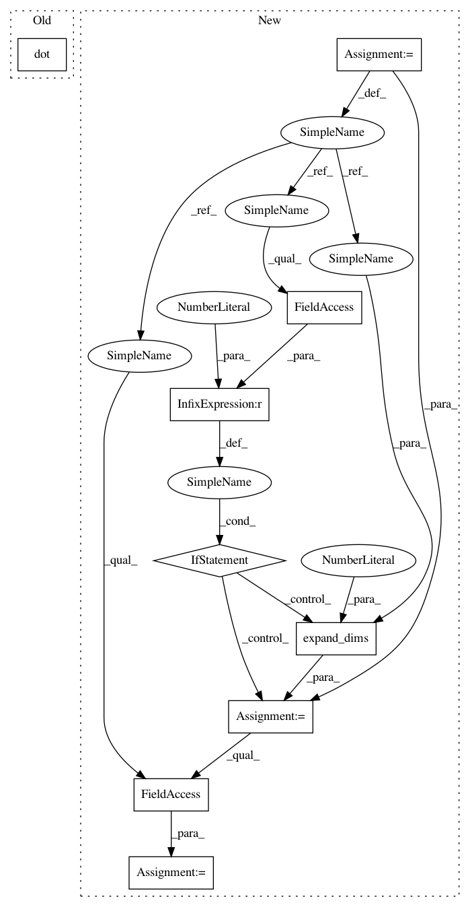

506b234094009d55d326f1ce957f53f15d4b65ee,geomstats/spd_matrices_space.py,SPDMetric,log,#SPDMetric#Any#Any#,182
Before Change
sqrt_base_point = scipy.linalg.sqrtm(base_point)
inv_sqrt_base_point = np.linalg.inv(sqrt_base_point)
point_near_id = np.dot(np.dot(inv_sqrt_base_point,
point),
inv_sqrt_base_point)
log_at_id = group_log(point_near_id)
log = np.dot(np.dot(sqrt_base_point,
log_at_id),
After Change
point = np.expand_dims(point, axis=0)
assert point.ndim == 3
if base_point.ndim == 2:
base_point = np.expand_dims(base_point, axis=0)
assert base_point.ndim == 3
n_points, _, _ = point.shape
n_base_points, mat_dim, _ = base_point.shape
assert (n_points == n_base_points
or n_points == 1
or n_base_points == 1)
In pattern: SUPERPATTERN
Frequency: 4
Non-data size: 9
Instances
Project Name: geomstats/geomstats
Commit Name: 506b234094009d55d326f1ce957f53f15d4b65ee
Time: 2018-02-26
Author: ninamio78@gmail.com
File Name: geomstats/spd_matrices_space.py
Class Name: SPDMetric
Method Name: log
Project Name: geomstats/geomstats
Commit Name: 953cd54eff33bf1a77870044e4c9bfdf320e889d
Time: 2018-02-11
Author: ninamio78@gmail.com
File Name: geomstats/hypersphere.py
Class Name: Hypersphere
Method Name: intrinsic_to_extrinsic_coords
Project Name: geomstats/geomstats
Commit Name: 506b234094009d55d326f1ce957f53f15d4b65ee
Time: 2018-02-26
Author: ninamio78@gmail.com
File Name: geomstats/spd_matrices_space.py
Class Name: SPDMetric
Method Name: exp
Project Name: geomstats/geomstats
Commit Name: 506b234094009d55d326f1ce957f53f15d4b65ee
Time: 2018-02-26
Author: ninamio78@gmail.com
File Name: geomstats/spd_matrices_space.py
Class Name: SPDMetric
Method Name: log
Project Name: geomstats/geomstats
Commit Name: 39caa436b0249d79ebec385a08b891f0c3e4edbb
Time: 2018-02-11
Author: ninamio78@gmail.com
File Name: geomstats/hyperbolic_space.py
Class Name: HyperbolicSpace
Method Name: intrinsic_to_extrinsic_coords